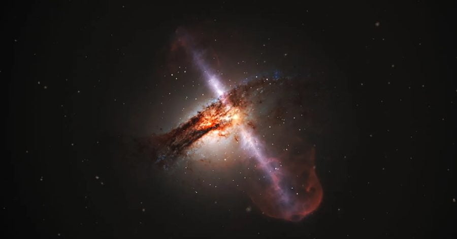

နက္ခတ် ပညာရှင် များဟာ အလင်းလျင်ထက် ၇ ဆ မြန်တဲ့ အလျှင်နဲ့ ရွေ့လျားနေဟန် ပေါ်တဲ့ ဓါတ်ငွေ့တန်းကြီး တစ်ခုကို အာကာသ တနေရာမှာ ရှာတွေ့ ခဲ့ကြပါတယ်။ ဒါဟာ အစဉ်အလာ ယုံကြည်ချက် ဖြစ်တဲ့ ဘယ်အရာမှ အလင်းထက် ပိုမြန်အောင် မသွားနိုင်ဘူး ဆိုတဲ့ ရူပဗေဒ အခြေခံ သဘောတရားနဲ့ ဆန့်ကျင် နေပါတယ်။
ဒါပေမယ့် နက္ခတ် ပညာရှင် တွေကတော့ အခု ဖြစ်ရပ်ဟာ အမြင်အာရုံကို လှည့်စားတဲ့ လှည့်စားမှု တစ်ခုသာ ဖြစ်တယ်လို့ ရှင်းပြ ကြပါတယ်။ superluminal motion လို့ ခေါ်တဲ့ အလင်းလျှင်လွန် ရွေ့လျားမှု ဖြစ်စဉ်မှာ တကယ်တော့ ဒီ ဓါတ်ငွေ့တန်းကြီး ထဲက ဓါတ်ငွေ့မှုန် တွေဟာ အလင်းလျင်ထက် မြန်အောင် ရွေ့လျား သွားကြတာ မဟုတ်ပါဘူးတဲ့။
အခု တွေ့မြင်ရတဲ့ ဓါတ်ငွေ့ တန်းကြီးဟာ နူထရွန် ကြယ်နှစ်စင်း တိုက်မိပြီး ဖြစ်ပေါ်လာတဲ့ ပေါက်ကွဲမှု ကနေ ထွက်ပေါ် လာခဲ့တာပဲ ဖြစ်ပါတယ်။
ဒီ ကြယ်နှစ်စင်း တိုက်မိမှုကြောင့် ထွက်ပေါ်လာတဲ့ စွမ်းအင်တွေကြောင့် ဓါတ်ငွေ့မှုန် တွေဟာ အလင်းလျှင်ရဲ့ ၉၉.၉၇ ရာခိုင်နှုန်း အမြန်နှုန်းနဲ့ လွင့်ထွက် လာကြပါတယ်။ ဒီ အမြန်နှုန်းဟာ အလင်းလျှင်အောက် အနည်းငယ်ပဲ လျော့နည်းတဲ့ အလျင်နှုန်း ဖြစ်ပါတယ်။
ဒီ အမြန်နှုန်းကို မိုင်နဲ့ ပြရရင် တစ်နာရီကို မိုင်သန်း ၆၇၀ မြန်တဲ့ အမြန်နှုန်း ဖြစ်ပါတယ်။
ဒီ ဓါတ်ငွေ့ တန်းကြီးကို ထွက်ပေါ်လာ စေတဲ့ နူထရွန် ကြယ်နှစ်စင်း တိုက်မိမှုကို ၂၀၁၇ ခုနှစ်က ပထမဆုံး ပညာရှင်တွေ သတိထား မိခဲ့ကြပါတယ်။ နူထရွန် ကြယ် ဆိုတာက အလွန် သိပ်သည်းတဲ့ ကြယ်တစ်စင်း ဖြစ်ပါတယ်။ သူ့ရဲ့ ဒြပ်ထု ပမာဏဟာ နေ ရဲ့ ဒြပ်ထုနဲ့ မတိမ်း မယိမ်း တူပေမယ့် အရွယ်အစား ကတော့ ရန်ကုန်မြို့ တစ်မြို့စာ လောက်ပဲ ရှိပါတယ်။ ဒီလို အလွန် အင်မတန် သိပ်သည်း ကျစ်လစ်တဲ့ နူထရွန် ကြယ်နှစ်စင်း တိုက်မိ ကြတဲ့ အခါမှာ အလွန် ပြင်းထန်တဲ့ ပေါက်ကွဲမှုနဲ့ အတူ များပြားလှ စွာသော စွမ်းအင်တွေ ထွက်ပေါ် လာခဲ့ပါတယ်။
ဒီ ပေါက်ကွဲမှုကို ပထမဆုံး ဆွဲငင်အား လှိုင်းတွေ အနေနဲ့ တိုင်းတာ ရရှိ ခဲ့ပါတယ်။ Gravitational wave လို့ ခေါ်တဲ့ ဆွဲအား လှိုင်းတွေဟာ ဟင်းလင်းပြင် နဲ့ အချိန် (space-time) ကို လှုပ်ခါ ရိုက်ခတ် သွားစေတဲ့ ဆွဲအား လှိုင်းတွေ ဖြစ်ကြပါတယ်။
ဒီလို ထောက်လှမ်း ရရှိပြီး သိပ်မကြာမီ ကာလမှာပဲ နက္ခတ် ပညာရှင် တွေဟာ ဒီ တိုက်မိ မှုကနေ ထွက်လာတဲ့ ဓါတ်ငွေ့ တန်းကြီးကို တွေ့ရှိ လာခဲ့ ကြရပါတယ်။ ဒါပေမယ့် ဒီ ဓါတ်ငွေ့တန်းကြီး ထွက်ပေါ်လာတဲ့ အရှိန်ဟာ အလင်းလျင် နှုန်းထက် ၇ ဆ လောက် မြန်နေတာကို ထူးဆန်းစွာ တွေ့ရှိ ခဲ့ကြ ပါတယ်။
အခုလို ဖြစ်တာနဲ့ ပတ်သက်လို့ ပညာရှင် တွေရဲ့ ရှင်းလင်းချက် အရ ဒီလို ဖြစ်ရတာဟာ ဒီ ဓါတ်ငွေ့တန်း ကြီးထဲက ဓါတ်ငွေ့ ဒြပ်မှုန်တွေရဲ့ အလင်းလျှင်နှုန်း နီးပါး ရွေ့လျားမှုကြောင့် ဖြစ်တယ်လို့ ဆိုပါတယ်။
ဒီလို ရွေ့လျား မှုကြောင့် ဓါတ်ငွေ့တန်းရဲ့ ရှေ့ဦးပိုင်းက ပထမ အစဦး ထွက်လာတဲ့ ဓါတ်ငွေ့မှုန်တွေနဲ့ အမြှီးပိုင်းက နောက်ကျ ထွက်လာတဲ့ ဓါတ်ငွေ့ မှုန်တွေဟာ ကမ္ဘာပေါ်ကို အချိန် သိပ်မခြားပဲ မရှေးမနှောင်း ရောက်ရှိလို့ လာကြပါတယ်။ ဒါပေမယ့် ဒီလို ဖြစ်စဉ်ကို ကမ္ဘာပေါ်က ကြည့်တဲ့ အခါကျတော့ အမြှီးပိုင်းက ရွေ့လျားတဲ့ ဓါတ်ငွေ့တွေရဲ့ လျင်မြန်မှုကြောင့် ဒီ ဓါတ်ငွေ့တန်းကြီး တစ်ခုလုံးက အလင်းလျင်ထက် ၇ ဆ လောက် မြန်တဲ့ အလျင်နဲ့ ရွှေ့လျား နေတယ်လို့ မြင်ရတာ ဖြစ်ပါတယ် လို့ နက္ခတ် ပညာရှင် တွေက ရှင်းပြ ကြပါတယ်။
Ref: Energy jet traveling 7 times the speed of light appears to break the laws of physics | Live Science
အလင်းထက် ၇ ဆ မြန်တဲ့အလျင်နဲ့ သွားနေဟန် ပေါ်တဲ့ ဓါတ်ငွေ့တန်းကြီး ရှာတွေ့

November 25, 2022
Other Posts
- အင်္ဂါဂြိုလ်ပေါ်မှာ သက်ရှိတွေ ရှာတွေ့ဖို့ နီးစပ်ပြီလား
- နောက်တကြိမ် ပြန်မြင်တွေ့ရမယ့် ဆူပါနိုဗာ ကြယ်ပေါက်ကွဲ မှုကြီး
- ဆူပါနိုဗာ ကြယ်ပေါက်ကွဲမှုကြီးကို ပထမဆုံး အကြိမ် မှတ်တမ်းတင်နိုင်
- ရှေးအီဂျစ်တွေဟာ အသား ဖြူသလား မည်းသလား
- နာဆာက လွှတ်တင်မယ့် နေစွမ်းအားသုံး ဒုံးစက်တပ် အာကာသယာဉ်
- တရုတ်အာကာသ စခန်းမှ ယာဉ်မှူးများ ရိုက်ကူးထားသော ဓါတ်ပုံများ
- အထက်တန်း ကျောင်းသားလေး သစ်သားနဲ့ ဆောက်ထားတဲ့ ကား
- လေယာဉ် ဘယ်လိုလေထဲ ပျံသလဲ
- သစ်ပင်လူသား
- လေယာဉ်တင် သင်္ဘောကိုတောင် မနိုင်မယ့် ကမ္ဘာ့အကြီးဆုံး သံလိုက်တုံးကြီး